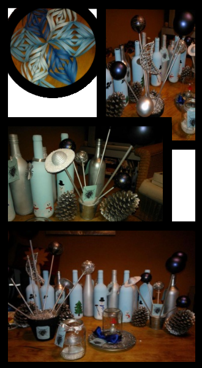

Voor het kerstfeest van C.S.V. Alpha hebben wij dit jaar de versiering gemaakt. Dit was meteen ook het eerste moment waarop wij ons aan de vereniging hebben voorgesteld. De ideeën voor de centerpieces hebben we opgedaan op pinterest. Hier onder zijn een aantal van onze creaties te zien.
